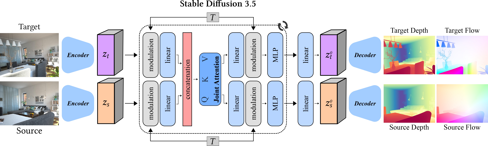
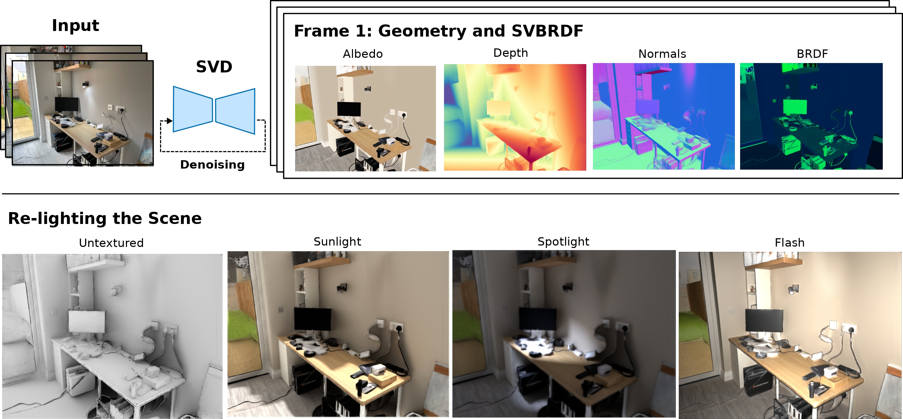

|

|
Estimating Geometry and Pose for Scene Reconstruction
Unifying depth and camera motion estimation from RGB images to enable consistent 3D scene reconstruction.
[Overview]
This project develops a framework that jointly estimates scene geometry (depth)
and camera motion directly from pairs of RGB images. We combine visual
foundation models (e.g., SD3.5, DINOv2) with geometric optimization
to refine predictions into a consistent 3D representation.
Our approach performs gradient descent over a simple least-squares objective,
aligning predicted optical flow with correspondences from an off-the-shelf
flow estimator. By fine-tuning pretrained foundation models to predict
affine-invariant depth and optical flow jointly, we bridge geometry and motion
estimation in a single unified system.
Contribution: A method that integrates learning-based priors with
optimization, enabling robust 3D scene reconstruction from multiple RGB views.
|
|

|
Scene Understanding and Perception using Multi-view Diffusion Priors
Building complete 3D scene models, including geometry and material properties, from multi-view RGB images.
[Overview]
This work aims to recover a full 3D representation of indoor scenes — geometry
(depth and normals) and appearance (SVBRDF) — directly from RGB images.
We adapt the Stable Video Diffusion model to a multi-view setting,
conditioning it on several images of a scene and training it to output depth
maps, surface normals, and spatially varying reflectance properties. This
approach leverages diffusion priors for learning consistent multi-view
geometry and appearance estimation.
Contribution: A novel diffusion-based method that jointly estimates
geometry and SVBRDFs, providing a complete 3D scene model. This enables
downstream applications such as relighting, novel view synthesis, and 3D
reconstruction.
|